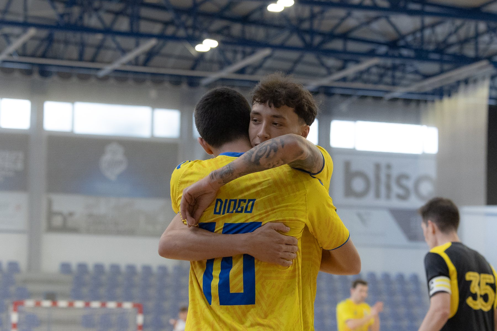
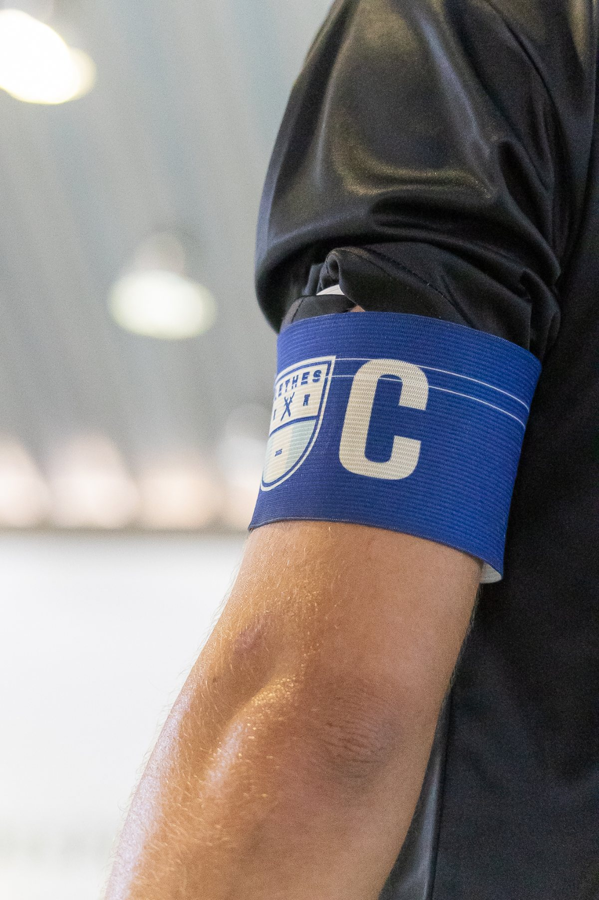
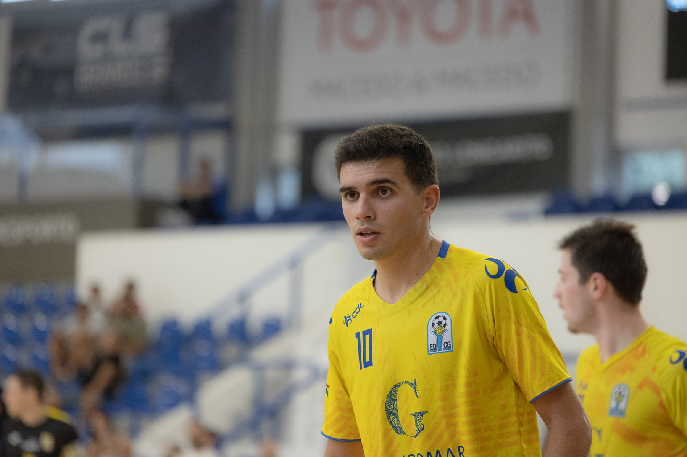

Portugal e Espanha
Fotografia de futsal e eventos desportivos
Jogos, torneios e eventos de clubes.
O serviço
Jogos, torneios e eventos
Além do karting e do hóquei em patins, fotografo futsal: jogos, torneios, treinos e eventos de clubes. Fotografo os lances e também os atletas, o banco e a bancada.
Também aceito trabalhos de futebol, voleibol, basquetebol, atletismo e outras modalidades. Antes do evento combinamos o que é prioritário e como vão ser usadas as fotografias.
CompetiçãoLances, golos e festejos.
PessoasAtletas, treinadores e público.
EntregaFotografias editadas, prontas a publicar.



Como funciona
Do pedido à entrega
Antes
Indique a data, o local, o programa e o que precisa.
No evento
Fotografo a competição e o que se passa à volta.
Depois
Recebe as fotografias editadas no prazo combinado.